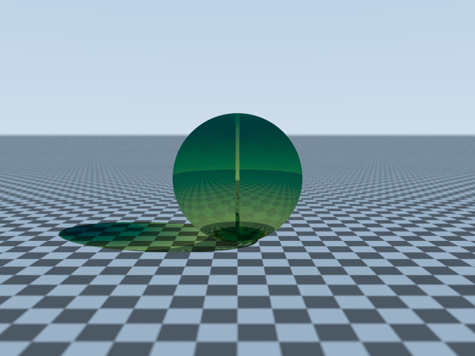
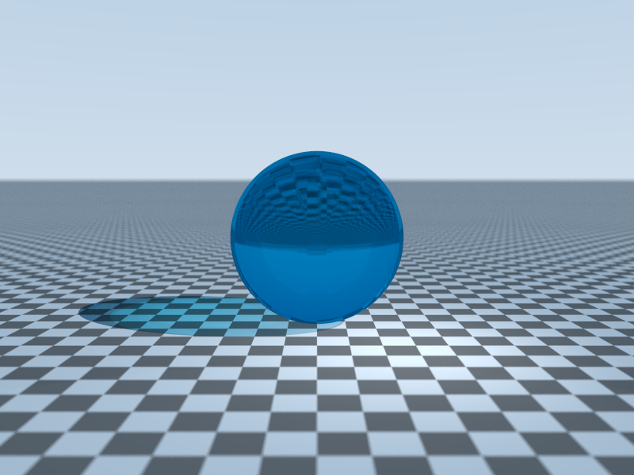
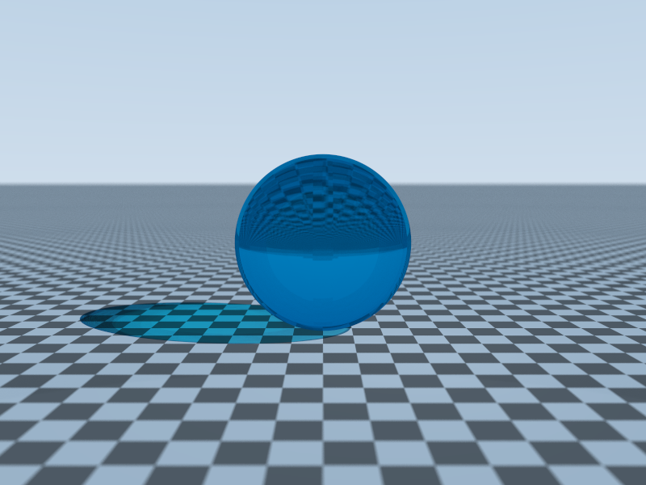

BSDF
BSDF carefully defines the reflective properties of object surfaces.
Before introducing BSDF, let’s clarify two concepts.
The irradiance describles the radiant
flux reaching a unit area. Simply, it describles actual light intensity
received by the surface,(so it need \cos,ha?).
The radiance describles radiant flux
per unit projected area per unit solid angle.
The differential irradiance describles
the contribution of incident irradiance L_i(\omega_i) from a specific direction w_i to a point on the surface. dE(\omega_i)=dL_i(\omega_i)\cos\theta
d\omega_i The differential
radiance describles the describles the emissivity of the incident
direction \omega_i in the reflective
direction \omega_o. L_o(\omega_o)=\int_{\Omega}dL_o(\omega_o)
Differential emissivity is proportional to differential irradiance,
hence the definition of BSDF. f_r(\omega_i,\omega_o)=\frac{dL_o(\omega_o)}{dL_i(\omega_i)\cos\theta
d\omega_i}\cdot\frac{1}{\mathtt{sr}} Naturally, we then wrote out
the rendering equation. L_o(\omega_o)\int_{\Omega}f_r(\omega_i,\omega_o)L_i(\omega_i)\cos\theta_i
d\omega_i\cdot\frac{1}{\mathtt{sr}}
Sampling based on Monte Carlo integral
Monte Carlo integral is an efficent sample method. It’s unbiased and the variance decreased to \frac{1}{N^2}. In rendering,it can be written by following style: L_o(\omega_o)=L_e(\omega_o)+\frac{1}{N}\sum\limits_{i=1}^N\frac{f_r(\omega_i,\omega_oo)L_i(\omega_i)\cos\theta}{p(\omega_i)}
Proposition.
Proposition 1. Monte Carlo integral is unbiased and the variance decreased to \frac{1}{N^2}
Proof. Let g(\omega_i)=\frac{f_r(\omega_i,\omega_o)L_i(\omega_i)\cos\theta}{p(\omega_i)} \mathbb{E}[g(\omega_i)]=\int_{\Omega}g(\omega_i)\cdot p(\omega_i)d\omega_i=\int_{\Omega}g(\omega_i)d\omega_i \mathbb{Var}[g(\omega_i)]=\mathbb{E}[g^2(\omega_i)]-\mathbb{E}[g^2(\omega_i)] \sigma=\int_{\Omega}\frac{g^2(\omega_i)}{p(\omega_i)}-\int_{\Omega}g^2(\omega_i) Because of the samples are independent and identically distributed. let: \mathbb{V}[ar]=\frac{\sigma}{N^2} ◻
Therefore, choosing a reasonable PDF is crucial. What is the best
p(\omega_i)?
Let the optimal proposal distribution is q(\omega_i). I=\int g(\omega_i)p(\omega_i)d\omega_i \mathbb{Var}[I]=\frac{1}{n}(\int\frac{g^2(\omega_i)p^2(\omega_i)}{q(\omega_i)}-I^2)d\omega_i
obviously we should minimize \int\frac{g^2(\omega_i)p^2(\omega_i)}{q(\omega_i)}
Constructing Lanrange multipliers.\mathcal{L}(\omega_i,\lambda)=\int(\frac{g^2(\omega_i)p^2(\omega_i)}{q(\omega_i)}+\lambda
q(\omega_i))d\omega_i Use the calculus of variations: \frac{\partial(\frac{g^2p^2}{q}+\lambda
q)}{\partial q}=-\frac{g^2p^2}{q}+\lambda=0 q(\omega_i)=\frac{|g(\omega_i)|p(\omega_i)}{\int|g(\omega_i)|p(\omega_i)d\omega_i}
unfortunately, this is incalaulate. The equation we want appear the
answer. so we use sample.
Cosnie-Weighted Hemisphere sampling
In an ideal diffuse reflection model, f_r=\frac{\rho}{\pi}, this gives us a natural
idea that let PDF be proportional to \cos\theta. \int_{\Omega}p(\omega)d\omega=\int_{0}^{2\pi}\int_{0}^{\frac{\pi}{2}}(c\cdot\cos\theta)\sin\theta
d\theta d\phi=1 p(\omega)=\frac{cos\theta}{\pi} L_o(\omega_o)=\frac{\rho}{N}\sum\limits_{i=1}^{N}L_i(\omega_i)
It’s unbiased. It quite obvious that it uses the idea of importance
sampling–sample more from areas that makes a significant
contributions.
A native way to implement this is use CDF’s inverse function. \int_{0}^{2\pi}\int_{0}^{\frac{\pi}{2}}p(\theta,\phi)d\theta
d\phi=\int_{0}^{2\pi}\int_{0}^{2\pi}p(\omega)d\theta d\phi=1
p(\theta)=\int_{0}^{2\pi}p(\phi)d\theta
d\phi F(\theta)=\int_{0}^{\theta}p(\theta)=\sin^2\theta
Give to random number \xi_1,\xi_2\in[0,1] F(x)=\xi_1\to\sin\theta=\sqrt{\xi_1},\cos\theta=\sqrt{1-\xi_1}
x=\cos\theta\phi\sin\phi=\cos(2\pi\xi_2)\sqrt{\xi_1}
y=\sin\phi\sin\theta=\sin(2\pi\xi_2)\sqrt{xi_1}
z=\sqrt{1-\xi_1}
template<typename T>
vec3<T,V>sp(const vec3<T,V>&n,int dep){
Independent<T>s=in.clone(dep);
T u=s.get1d(),v=s.get1d();T phi=2.0*3.1415926535*u;
T r=sqrt(v);assert(!isnan(r));T x=cos(phi)*r,z=sin(phi)*r,y=sqrt(max(0.0,1.0-v));vec3<T,V>u1;
if(abs(n.x)>T(0.1))u1=nor(cs(vec3<T,V>(0,1.0,0),n));
else u1=nor(cs(vec3<T,V>(1.0,0,0),n));
vec3<T,V>v1=cs(n,u1);return x*u1+y*n+z*v1;
}
Another way is uniform disk mapping, it’s so easy to understand and implement. Not mentioned much(am I lazy? decided not to).
Light source area sampling
If the light is too small, the above method has very slow variance canvergence. Since sampling b=objects is slow, let’s just sample the light soure directly. For any pixel, we sample the light source and connect the pixel and the light source. But the problem is the render equation is defined in the directional domain(soild angle). We need a concersion factor. What came to your mind? Jacobian. We need to project the surface area onto a plane perpendicular to light rays. dA^\perp=dA\cos\theta_L \frac{dA^\perp}{dA}=\cos\theta_L distance scaling d\omega=\frac{dA^\perp}{r^2} \frac{d\omega}{dA^\perp}=\frac{1}{r^2} d\omega=(\frac{dA^\perp}{dA}\cdot\frac{d\omega}{dA^\perp})dA=\frac{\cos\theta_L}{r^2}dA L_o(x,\omega_o)\approx\frac{A}{N}\sum\limits_{k=1}^{N}L_e(y_k\to x,-\omega_k)\cdot\frac{\cos\theta_L}{r^2}\cos\theta_k\cdot V(x,y_k) where V(x,y) is visable function and p(\omega)=\frac{1}{A\cdot|J|}
template<typename T>
vec3<T,P>sun(5,5,5);
template<typename T>
vec3<T,P>p1(6,5,2);
template<typename T>
vec3<T,P>p2(3,7,4);
template<typename T>
Spectrum<T>sc(10,10,10);
template<typename T>
vec3<T,V>e1=p1<T>-sun<T>;
template<typename T>
vec3<T,V>e2=p2<T>-sun<T>;
template<typename T>
vec3<T,V>area(){
sampler<T>s;
T u=s.get1d(),v=s.get1d();vec3<T,V>rd=u*e1<T>+v*e2<T>;
vec3<T,P>pt=sun<T>+vec3<T,P>(rd.x,rd.y,rd.z);
vec3<T,V>dir=pt-p;vec3<T,V>n1=nor(cs(e1<T>,e2<T>));
T s=len(cs(e1<T>,e2<T>));T dis=max(len(dir),eps);return nor(dir);
}
